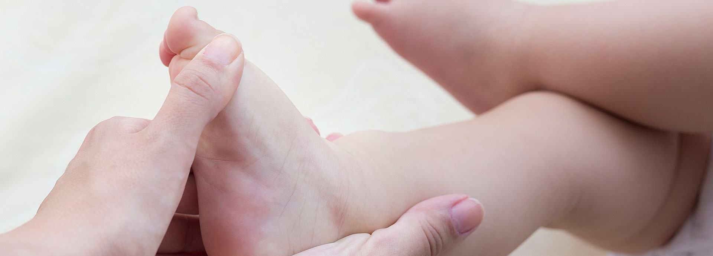
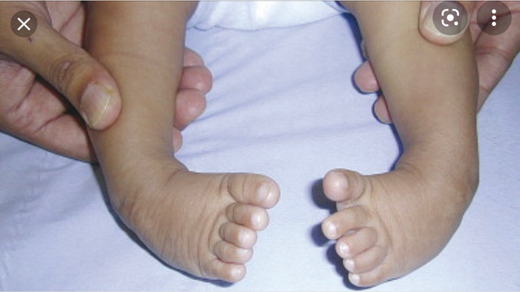
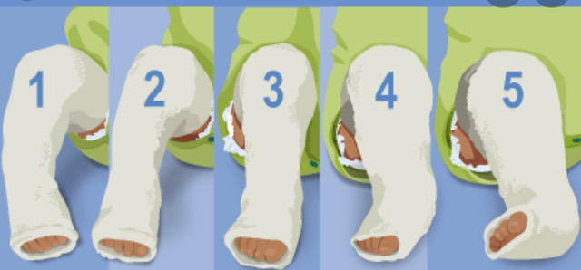
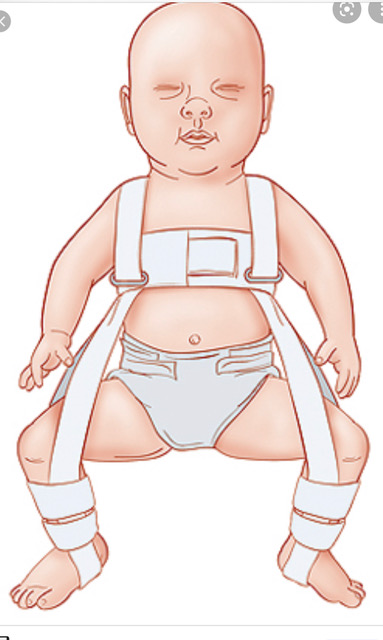
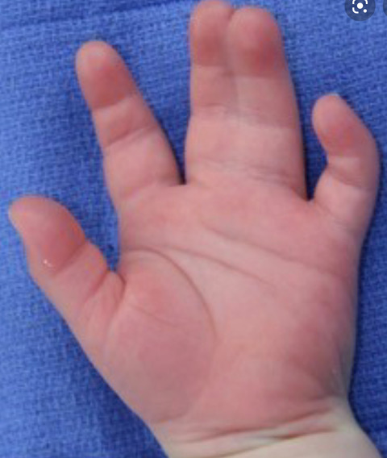
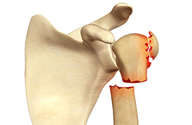

හැඳින්වීම

Club feet හෙවත් ළදරුවන්ගේ පාද එකක් හෝ දෙකම ඇතුලට හැරී පැවතීම.


Club feet හෙවත් ළදරුවන්ගේ පාද එකක් හෝ දෙකම ඇතුලට හැරී පැවතීම.
බබා ඉපදෙන කොට කකුල ඇදට තියෙන අසාමාන්ය තාවයන් මොනවද ?
ඉපදෙන විටම දක්නට ලැබෙන පාද වල අබාදයන් කිහිපයකම තිබෙනවා. ඒවා අතරින් ක්ලබ්ෆූට් (Clubfoot) හෙවත් "මුගුරු පාද " යන නාමයෙන් හඳුන්වන අන්ගවිකලතාවය තම සුලබවම දක්නට ලැබෙන්නේ. මෙය යනු උපතින්ම පිහිටන ආබාධයක් වන අතර එහිදී පාද එකක් හෝ දෙකම ඇතුළට සහ පහළට නැමී ඇදට පිහිටනව. පවතින දත්ත වලට අනුව සෑම උපත් 1000 කදීම 1 සිට 4 දක්වා උපත් සංඛ්යාවක් ක්ලබ්ෆූට් පාදයන් පිහිටිය හැකියි. මුගුරුපාද අන්ගවිකලතාවය බහුලව දක්නට ලැබෙන්නේ කුලුඳුල් දරුවන් සහ පිරිමි දරුවන්ට. එත් එක්කම එය පාද දෙකටම හෝ එකකට හෝ පිහිටිය හැකියි. මෙම අබාධයට එක පැත්තක් පමණක් දක්නට ලැබෙන විට එම කකුල සහ පාදය අනෙකට වඩා කුඩා විය හැකිය. මෙම අංග විකලතාවය, රෝගීන්ගෙන් 50% කගේ පමණ පාද දෙකටම බලපායි. බොහෝ විට මම තත්ත්වය වෙනත් ශරිර්රයේ ඇතිවිය හැකි අන්ගවිකලතාවයන් සමඟ සම්බන්ධ නොවේ. ලෝකයේ එය නවසීලංන්තයේ මාඕරි ජනතාව අතර බහුලව දක්නට ලැබෙන අතර චීන ජනතාව අතර එය සුලභ නොවේ.
මෙම අන්ගවිකලතාවය හටගැනීමට බලපාන හේතු මොනවාද ?
නිශ්චිත හේතුවක් නිසා මෙම තත්ත්වය ඇතිවන බව සාමාන්යයෙන් හඳුනා ගත නොහැකියි. ජානමය හා පාරිසරික සාධක දෙකම සම්බන්ධ වී කළල අවස්ථාවට බලපෑමෙන් හටගන්නා බවට විශ්වාස කෙරෙනවා. එක සමාන නිවුන් දරුවන් දෙදෙනෙකුට වැළඳී තිබුනොත්, අනෙකාට ද, මෙම අන්ගවිකලතාවය පිහිටීමට 33% ක සම්භාවිතාවක් තිබෙනවා. මොවුන්ගේ පාදයේ පහල කොටස්වල පටක ප්රත්යස්ථ භාවය අඩුවීමෙන් ඒවා කෙටිවිමත්, මාංශ පේශි හෝ පහළ පාදයේ සම්බන්ධක පටක මද වශයෙන් විනාශ වීමක් දැකිය හැකියි . ඉතා අඩු ප්රතිශතයක දරුවන්ට කොඳු නාරටියේ පහල කොටස්වල අසම්පුර්ණ වර්දනයන් නිසා එම ප්රදේශ ආශ්රිතව ගණ රෝම, තරල පිරුණු ගෙඩි වැනි දැ පිහිටිය හැක. ගැබිණි අවදියේදී කරන අල්ට්රා සවුන්ඩ් (Ultrasound) පරීක්ෂණයකින් උපතට පෙර මෙම තත්ත්වය බොහෝ අවස්තාවලදී හඳුනාගත හැකියි.
මෙය සුවකරගන්නේ කෙසේද ?
දැනට ශල්ය කර්මයකින් තොරව මෙම ගැටලුව 95% විතර දරුවන්ගේ සුවකරගත හැකියි. මූලික ප්රතිකාර ලෙස සිදුකරනුයේ පැරිස් ප්ලාස්ටර් (Plaster of Paris ) කොලපු අදාරයෙන් පාද යුගල ප්රකුර්ති තත්ත්වයට පත්කර ගැනීමයි. මෙම ක්රමය ලොවට හඳුන්වා දුන්නේ කැනේඩියානු ජාතික මහාචාර්ය වරයකු වන පොන්සෙටි මහතායි. පාදය වඩා හොඳ ස්වරූපයකට ගෙන එමට සතිපතා ඇතුත් පැරිස් බදාම කොලපු දීමක් සිදුකෙරෙනවා. අභ්යන්තරව පවතින වකුටුවීම් වැඩි දියුණු වූ පසු, පාදයේ බල නහරය, හිරි වාට්ටා කරන සුළු සැත්කමකින් වෙන් කිරීමකින් පාදය තවදුරටත් ප්රකුර්ති මට්ටමට ගෙන එනවා. මෙම තත්ත්වයට පාද ගෙන ඒමට සති 5-6 ක පමණ කාලයක් තුල බදාම කොලපු 5-6 වාරයක් දැමිය යුතු වෙනවා.
ඉන් පසුත් සිදුකල යුතු දේවල් තියෙනවද ?
ඔව් , තවම ප්රතිකාර අවසන් නැහැ. මෙසේ ප්රකෘති ස්වරුපයට පත්වූ පාද එම ආකාරයෙන් පවත්වා ගැනීම අත්යවශ්ය වන අතර, මේ සඳහා ලෝහමය රාමුවකට සවිකරන ලද සපත්තු යුගලක් පලන්දවීම අවශ්ය වෙනවා. දරුවට ඇවිදීමට නොහැකි වයස කාලය තුල දවස පුරාවටත්, අවිදන, හිට ගැනීමට හැකි දරුවන් නිදා ගන්නා සෑම විටමත් (දිවා/රාත්රී ) පාවහන් පැළඳිය යුතු වෙනවා. අවම වශයෙන් දිනකට පැය 14-15 පමණවත් මෙම පාවහන් පැළඳිය යුතුයි. සාමාන්යයෙන් වයස අවුරුදු 4-5 පමණ වන තුරු මෙසේ පාවහන් පැළඳිය යුතු වෙනවා. මෙම පතිකාර ලබන දරුවන්ගෙන් 20% කට පමණ, යම් අවස්ථාවක පාදය නැවත ඇදවීමක්, ඇවිදින විට පාදයේ වක්ර වීමක් වුවිට, නැවත පැරිස් බදාම වාස්තු කිරීමක්, ශල්ය කර්මයක් භාවිතයෙන් පාදය සකස් කිරීමක් අවශ්ය වෙනවා.
ප්රතිකාර අතපසු වුනොත් ?
නිසි ප්රතිකාර නොකළ විටදී, ප්රතිකාර වලට නිසි දිනයන් තුල ලබා නොගැනීමෙන්, අතපසු කිරීමෙන්, පාදය විකෘති වී යන අතර, එවැනි රෝගීන් , ඔව්න්ගේ පාදයේ ඉවත දාරය මත පය තබා ගමන් කරයි. මෙය වේදනාව හා ඇවිදීමේ අපහසුතාවයටත් පාවහන් පැළඳීමේ අපහසුතාවයටත් හේතු විය හැක. මෙසේ වූ පසු නැවත සකස් කිරීමද අසීරු වනවා.

උකුල් සන්ධිය අඩු වශයෙන් වර්ධනය වීම හෝ විසන්ධි වී පැවතීම .
අලුත උපන් දරුවන් රෝහලේදී කෙරෙන සායනික පරීක්ෂාවෙන් මෙම රෝගය හඳුනා ගැනේ. ළදරුවන් උකුල සන්දියේ ස්කෑන් පරීක්ෂණයකට ලක්කෙරේ. එමගින් සන්දියේ ස්වභාවය නිසි අකාරයෙන් හඳුනා ගත හැක. මෙය ද සුලබ තත්ත්වයක් වන අතර වැඩිමනක්ම දරුවන් ශල්යකර්මයකින් තොරව සුව කළ හැක. කෙසේ වුවද සන්ධියේ වර්ධනය ඉතා අඩු මට්ටමක පවතින අවස්ථාවක ශල්යකර්ම එකක් හෝ කිහිපයක ආධාරයෙන් ප්රකෘති පත් කළ හැක .

අත් පා හා ඇඟිලිවල අසාමාන්යතා .
ඉහත සඳහන් තත්ත්වන් හැරුණුකොට තවත් අසාමාන්යතා දැකිය හැකි අතර ළදරුවාගේ සිරුරේ වර්ධනය වූ පසු ශල්යකර්මයට යොමු කරනු ලැබේ. ඔබගේ ගැටලුව අප වෙත යොමුකරන්න.

අස්ථි බිඳීම්
දරු උපතේදී හා පසුකාලීනව අතේ හා කකුලේ අස්ථි බිඳී යා හැක. මේවා වැඩිමනක් නිරායාසයෙන්ම සුවවේ. යම් ළදරුවකුගේ අස්ථි නිතර බිඳීමට ලක් වන්නේ නම් එය අස්ථිවල සවිශක්තිය හා සංයුතියේ දුර්වලතාවයක් වන අතර එය සඳහා ප්රතිකාර ගත යුතුය. නිරෝගී දරුවෙකුගේ සිදුවන සාමාන්ය අස්ථි බිඳී යාමක් විශේෂ ප්රතිකාරයකින් තොරව සුව වන අතර ඒවායින් පසුකාලීන ව ජීවිතයට බලපෑමක් නැත .